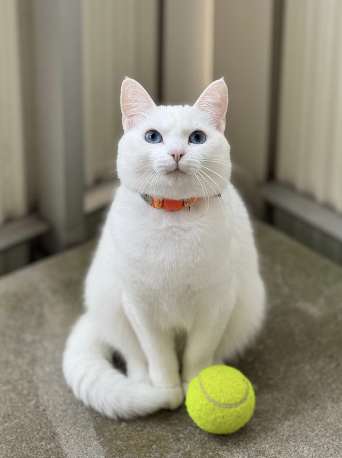
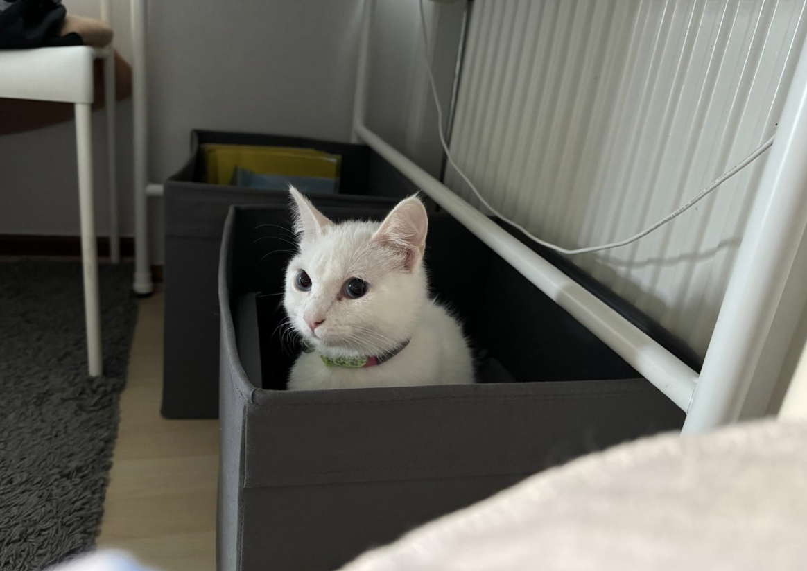
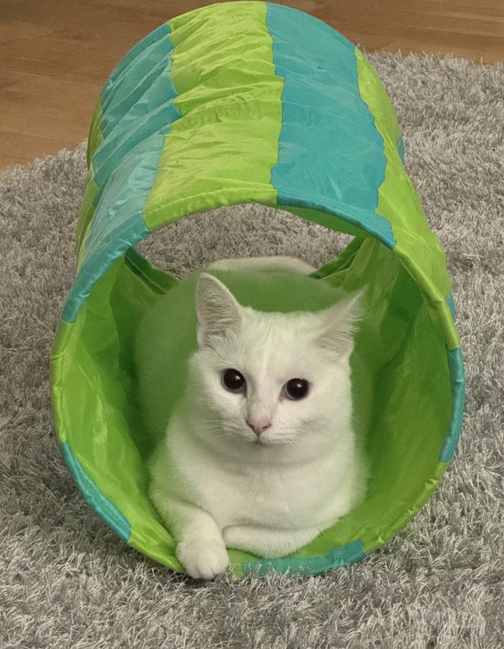
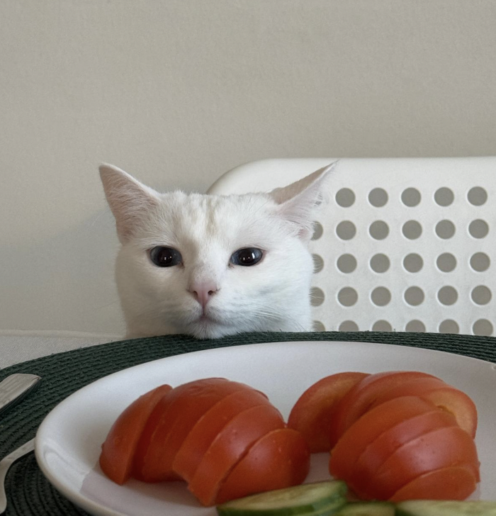
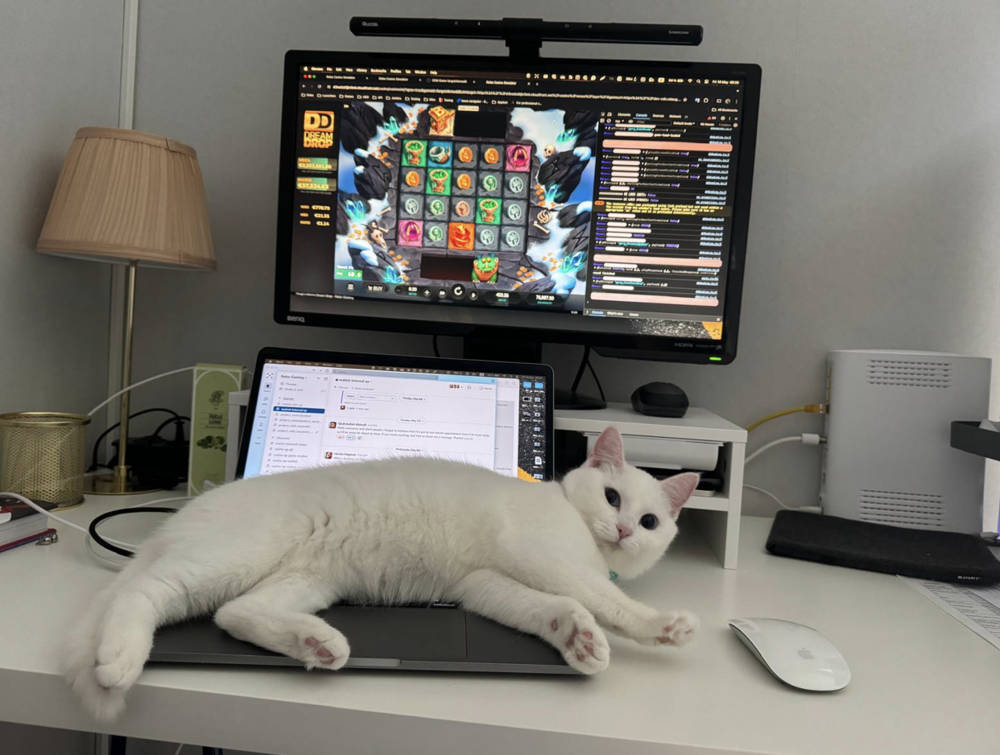

Meet My Cat

When she first came to us, she was young and shy. Over time, she slowly got used to her new home and to us. Today, it sometimes feels like the home belongs more to her than to us.
The Early Days

Getting Used to Her New Home

Feeling at Home

Now the Home Is Hers
